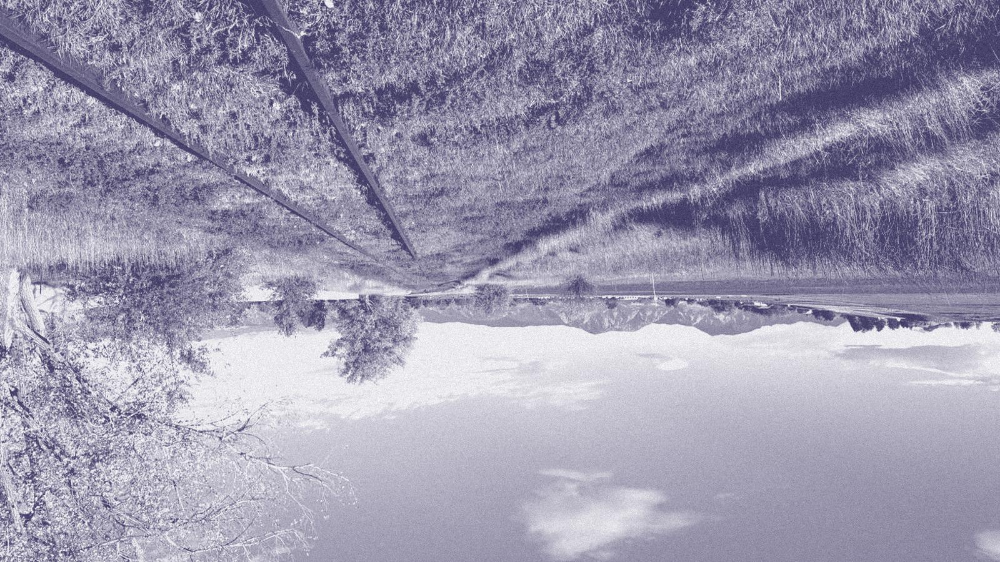
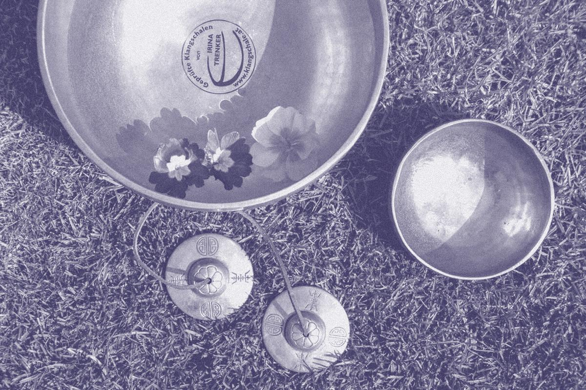

The Front Range Sound Bath Scene: A Summer 2026 Snapshot
The first count of a quietly widespread ritual — every public sound bath across Denver, Boulder, Fort Collins, and Colorado Springs. A point-in-time snapshot, not a trend: simply what is verifiably true of the calendar right now.

By the numbers
The citable stats
Each figure maps directly to a session on the calendar — nothing modeled, nothing projected.
Volume
About 22 sessions a week — more than most residents would guess
In the window measured, the calendar carried 75 approved sessions over 24 days — an average of 21.9 per week. Sound baths aren't a rare, seek-it-out event here; on a typical week you have your pick of roughly three a day, in four cities.
The volume is spread across many small hosts: 41 venues and 41 operators. The scene isn't dominated by one or two big studios — the most active single host accounts for 9 sessions in the window, and the rest is a long tail of one- and two-session operators. A cottage ecosystem of independent facilitators, not a chain.
| Busiest venues in the window | Sessions |
|---|---|
| Singing Bowls of the Rockies · Colorado Springs | 9 |
| Sacred Society · Denver | 5 |
| 1545 S Pearl St · Denver | 4 |
| Harmonist Sanctuary · Denver | 4 |
| Rocky Mountain Restore & Stretch LLC · Fort Collins | 4 |
Price
A $40 median — and about a third are free or by donation

Of the 41 sessions with a known access model, the middle 50% of paid tickets land in a tight band — $39 to $45 — with a full parseable range of $25 to $70.
Underneath the median sits the more human finding: roughly one in three (32%) is free, or offered by donation or sliding scale. A meaningful share is priced to be open to anyone.
The honest caveat on price
34 of 75 listings (45%) carry no stated price in the source — often free community or church-hosted gatherings. The figures above describe the priced-and-stated portion of the calendar. We report the median, not the average, so a few higher-priced sessions don't misrepresent the typical experience.
Geography
Four metros, evenly shared — a regional scene, not a Denver one
Denver anchors the calendar, but the notable finding is how evenly the rest distributes. Colorado Springs and Fort Collins each carry a fifth or more — well above what their relative size would predict.
Mapping the venues confirms the reach: located sessions span a ~121-mile north–south corridor, from Fort Collins down to Colorado Springs, tracking the I-25 population spine of the state. See them on the map →
Timing
An evening ritual, peaking Friday at 7 p.m.
Sound baths are overwhelmingly an after-work wind-down: 71% start at 5 p.m. or later, and just 11% are morning sessions. The single most common start time is 7:00 PM (20 sessions), then 6:00 PM (11), then 6:30 PM (8).
Weekends carry about 31% of the week's sessions — most sound baths happen on weeknights, a midweek reset rather than a weekend outing. For a curious first-timer: a weeknight around 7 p.m. gives you the most to choose from.
Modality mix
Not yet a reliable number — and we won't pretend otherwise
It's tempting to report which kinds of sound healing dominate — gong baths versus crystal bowls versus breathwork-with-sound. We're choosing not to, yet.
Why this figure is deferred
Nearly half of sessions (49%) are currently tagged only with the general "sound bath" label. Any modality breakdown would reflect how thoroughly listings have been tagged, not what's happening in the sessions themselves. As the calendar's tagging matures, this becomes a genuinely interesting figure — and a natural addition to the next edition.
A cottage scene of independent facilitators — 41 venues, 41 operators, a 121-mile corridor — where the median session costs $40 and about one in three is free.
Methodology & caveats
How these numbers were made
- Source. Every figure derives from the public sessions on Sound Bath Calendar, from a data snapshot taken 2026-07-21. The stdlib-Python analysis script is public — anyone can reproduce every number.
- Data window. Sessions starting between Jul 19 – Aug 11, 2026 — a forward-looking window of 24 days. This is every session approved and listed as of the snapshot date, not a full census of every sound bath that occurred.
- A snapshot, not a trend. The calendar is young. There is no year-over-year or growth data here, and none is implied. This edition is the baseline; its value compounds as future editions become comparable.
- Price parsing. Prices are free-text from operator listings ("$39", "Donation", "$15–40", "From $44.52"). Ranges use the midpoint. 45% of listings carry no stated price, so price statistics describe only the priced-and-stated subset. Medians resist high outliers.
- Venue & operator counts are distinct name strings; a few are near-duplicate variants, so the true count of physical spaces is slightly lower. We flag it rather than silently merge.
- Excluded. Private or invite-only sessions, sessions outside the four covered metros, and any listing not approved for the public calendar.
Figures reflect sessions listed as of 2026-07-21. Photography public domain (CC0) via Wikimedia Commons and rawpixel.
This is the first edition. As new quarters are published, past editions will be archived here — and once two or more exist, so will genuine trend data.
Writing about wellness on the Front Range? These figures are free to cite. Questions or a correction — see the calendar.